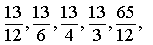

Item: tExtendArithmetic3c
Stem:
Extend the following sequence by giving the next
two terms:

. . .
Inputs:
- Enter your answers here:
- and
Key:
- Observable: 13/2,
91/12.
Score: 1;
Evidence Value: 1.
-
Student:Right! You correctly generated the next two terms in the arithmetic sequence.
-
Teacher:The student got this item correct.
- Observable: .
Score: 0;
Evidence Value: 0.
-
Student:Sorry, that's incorrect. The sequence given in the problem, 13/12, 13/6, 13/4, 13/3, 65/12,... is an arithmetic sequence. In this case, there is a common difference of 13/12 between terms. To get any term, add 13/12 to the previous term.
-
Teacher:The student got this item incorrect.
Metadata:
Item Node: tExtendArithmetic3c,
Difficulty: 3.
Proficiencies: ExtendArithmetic.